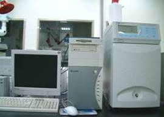
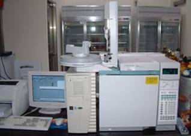
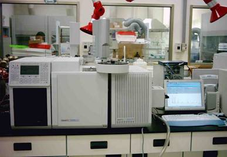
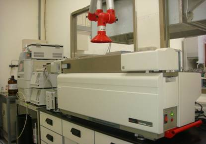

環境健康評估實驗室
研究方向
本實驗室之研究以「大氣中懸浮微粒成份之時序變化及傳播機制之探討」以及「微粒及持久性有機污染物質之暴露及健康風險評估」為兩大主軸。研究重點為(一)分析台北都會區大氣中懸浮微粒中的重要含碳化學物質：多環芳香烴(PAHs)、多氯聯苯(PCBs)、及有機氯農藥等三大類持久性有機污染物(POPs)；(二) 台北都會區懸浮微粒之水溶性離子粒徑分佈及季節變化；(三) 探討氣象因子及空氣污染物之交互作用，希望了解氣候變遷對公共衛生可能造成之衝擊；(四)民眾在不同小環境中的懸浮微粒及多環芳香烴類有機化合物之來源、濃度分佈、民眾暴露途徑、各影響因子之貢獻以及健康風險評估。
例如探討民眾在居家、寺廟以及進香過程中暴露到燃燒香枝產生之微粒及多環芳香烴(一類疑似致癌物)之濃度及影響因子、通勤族使用不同交通工具所暴露之微粒及多環芳香烴濃度及風險評估、沙塵事件及生質燃燒事件對台灣空氣品質影響評估等等。
儀器設備介紹
離子層析儀（ion chromatography，IC）
離子層析儀以電導度偵測器分析空氣懸浮微粒中水溶性之陰陽離子，包括海鹽離子(鈉離子及氯離子)、主要來自人為污染源之硫酸根離子、硝酸根離子、鉀離子及氨根離子、以及一些地殼中存在的鈣離子、鎂離子等。

氣相層析儀（gas chromatography， GC）
氣相層析儀接有兩種不同的偵測器，分別為電子捕捉式偵測器（electron capture detector，ECD）及火燄離子式偵測器（flame ionization detector，FID）。電子捕捉式偵測器對含有鹵族元素之有機物較為敏感，本實驗室目前主要分析之有機物為多氯聯苯（polychlorinated biphenyl）及有機氯農藥(chlorinated pesticides)，火燄離子式偵測器主要分析之有機物以多環芳香烴（polycyclic aromatic hydrocarbons，PAHs）為主。

氣相層析質譜儀(GC mass spectrometry， GC/MS)
質譜儀之主要特性為利用荷質比的特點增加分析物定性之準確性，且相對於氣相層析儀而言具有較低之偵測下限，可分析濃度較低之化學物質。目前本實驗室用以分析多環芳香烴、汽機車排放指標物以及香精指標物等。

串聯式液相層析質譜儀
(liquid chromatography -- triple-quadrupole mass spectrometry， LC/MS/MS)
串聯式液相層析質譜儀可分析水溶性有機物以及分子量較高之有機物，如空氣懸浮微粒中之有機酸類(二次微粒之重要成份)、醣類(生質燃燒指標物)、及輪胎磨損指標物等。也用來分析水中一些環境荷爾蒙類的新興污染物如鎮痛解熱劑、防曬乳、興奮劑等，這些污染物質可能對水中生物有危害性。
